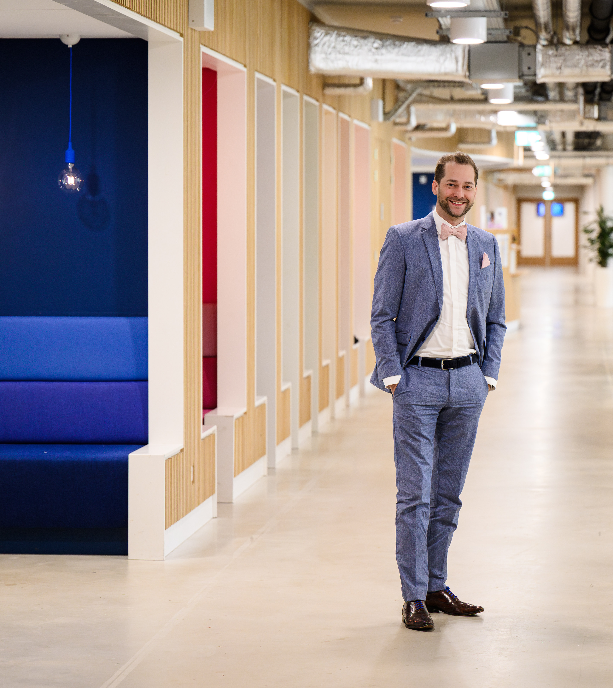

About

I am an Associate Professor of Entrepreneurship and Innovation at the School of Business and Economics at Maastricht University. My research specializes in entrepreneurship, strategy, and causal machine learning, with a focus on how data-driven methods can improve decision-making and innovation. I’m a co-founder of the Causal Data Science Meeting.
My work has been published in academic journals across innovation studies and computer science, such as the Journal of Business Venturing, Journal of Product Innovation Management, ACM CHI conference on Human Factors in Computing, Research Policy, or IEEE Transactions on Engineering Management, and received coverage in media outlets such as Harvard Business Review or Poets & Quants.
Over the past years, I bridged practical technical expertise with training in economics. I obtained my PhD in 2019 from RWTH Aachen University (Commission: Christian Hopp, Frank Piller, Oliver Salge). During my graduate studies and PhD, I was a visiting researcher at the MIT Center for Collective Intelligence at the MIT Sloan School of Management (Thomas Malone & Peter Gloor) and Collective Learning Group at the MIT Media Lab (César Hidalgo). I studied at Witten/Herdecke University, Germany, and was a visiting student at the Massachusetts Institute of Technology, USA. I am a co-founder of the startup MovieGalaxies, providing open source network data on Harvard DataVerse. In 2014-2015, I worked in a research project on data analytics in soccer for a Bundesliga club, specializing in complexity in passing networks. I further gained experience working at central marketing at Dr. Ing. h.c. F. Porsche AG, executive consulting with Dr. Georg Th. Fischer, and working in smaller consulting projects such as the German Space Liner (German Aerospace Center).
Together with co-authors, I have published on using machine learning to predict outcomes in crowdfunding with text, speech, and video information, on predicting venture capital investments with crowdfunding data, on experimental studies of psychological distance in product crowdfunding, and on topic models of disruptive innovation research. My research with colleagues is cited in official reports by the Organisation for Economic Co-operation and Development (OECD) and the Publications Office of the European Union, particularly within the Joint Research Centre of the European Commission. Since 2022, I am a webmaster in the extended executive team of the Technology and Innovation Management (TIM) division at the Academy of Management.
I have been awarded the Best Teacher Award at my faculty and was nominated for the Wynand Wijnen Education Prize on university level. My PhD thesis (summa cum laude) received the Borchers Badge at RWTH Aachen. I was a Fellow of the Royal Society of Arts and Marshall Memorial Fellow at the Marshall Fund of the United States. In 2012 I was happy to be a participant in the first Y Combinator Startup School and winning a Best Practice Paper Award at Stanford Medicine X. My project Nachhaltigkeitspreis.de (Sustainability Award) was once acquired by an initiative of the German Federal Government.